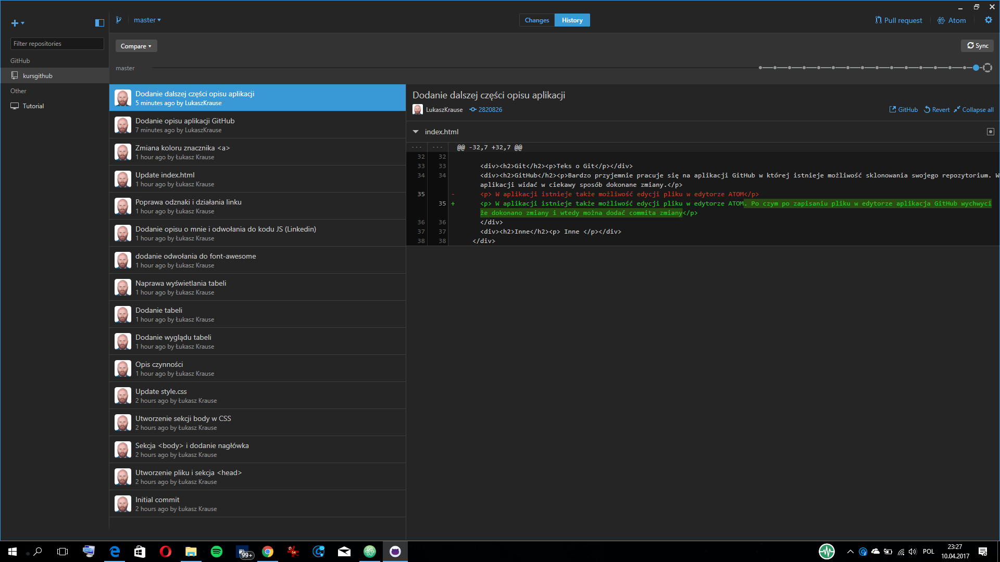
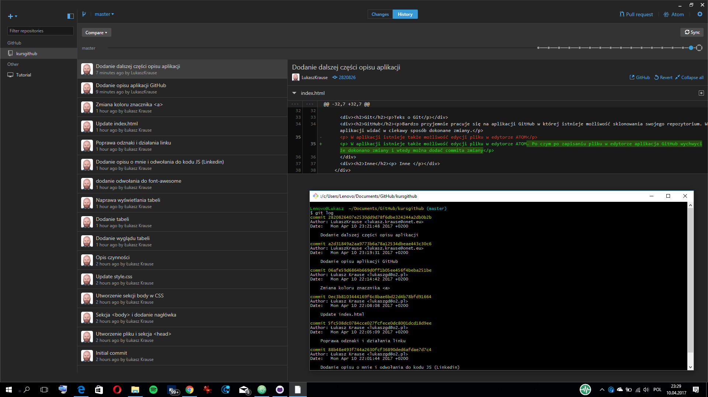

Wstęp
Kurs jest w trakcie tworzenia więc proszę się nie zrażać błędami i innymi dziwnymi rzeczami. Oczywiście można zawsze puknąć sie w czoło i powiedzieć co ten tutaj nawyczyniał
Nimniejsza strona są to moje zapiski z nauki Git i Git Hub
Trochę o mnie:
Nazywam się Łukasz Krause. Krótko o mnie: rocznik '85, Informatyk-amator  lubiący szperać w internecie i śledzić nowinki technologiczne. Ostatnie zboczenie to sprawdzanie czy dana strona jest responsywna ;) Nieleczący się serialomaniak
lubiący szperać w internecie i śledzić nowinki technologiczne. Ostatnie zboczenie to sprawdzanie czy dana strona jest responsywna ;) Nieleczący się serialomaniak  i szczęśliwy posiadacz psa
i szczęśliwy posiadacz psa  i kota
i kota  . Lubię proste i skuteczne rozwiązania.
. Lubię proste i skuteczne rozwiązania.
Zapraszam na moją stronę internetową www.and-it.pl
Git
Teks o Git
GitHub
Bardzo przyjemnie pracuje się na aplikacji GitHub w której istnieje możliwość sklonowania swojego repozytorium. W aplikacji widać w ciekawy sposób dokonane zmiany.
W aplikacji istnieje także możliwość edycji pliku w edytorze ATOM. Po czym po zapisaniu pliku w edytorze aplikacja GitHub wychwyci że dokonano zmiany i wtedy można dodać commita zmiany
Wygląd aplikacji 
Aplikacja także umożliwia korzystanie z wiersza poleceń Git poprzez GitShell lub PowerShell
Inne
Inne